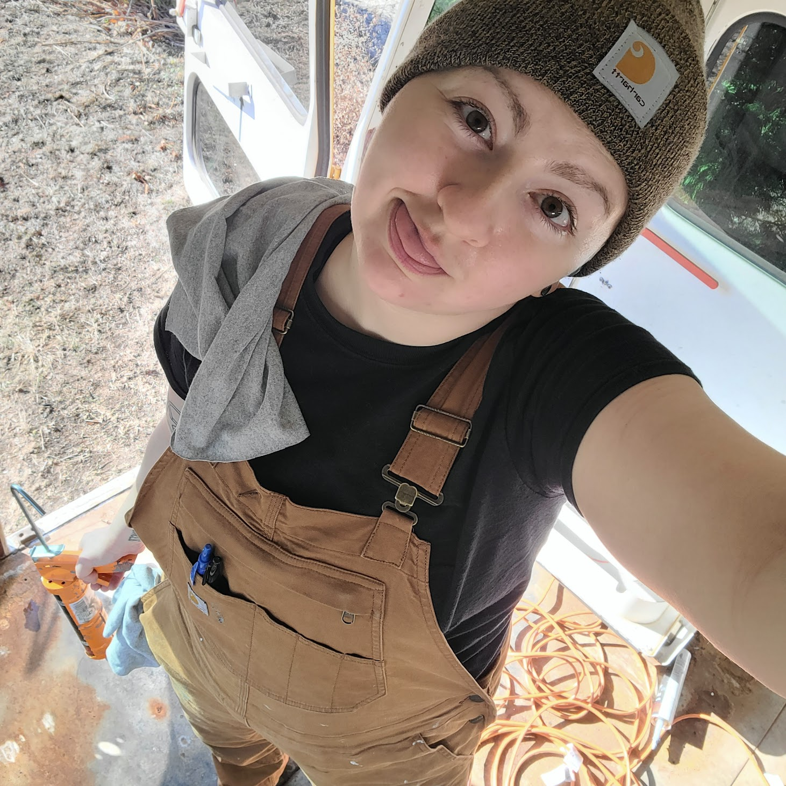

I'm Em! I live on a converted school bus named Sparrow. My little animal family and I are ping-ponging around the states for a while, making friends and having adventures! A little about me, for those I'm only just meeting: I'm in my 30's, queer, feral, and use she/her pronouns. My current critter crew includes a cat and three dogs. I enjoy animals, plants, books, making art, discovering new music, learning all the things, exploring nature, annnnnd napping. Just to make sure we're on the same page right from the start- FDT, melt ice, free Palestine, eat the rich, black lives matter, protect the earth. Oh and crunchy peanut butter is for heathens. I said what I said.
This website is essentially a social media replacement for me, as I got off Facebook and Instagram a few years ago. I knew I still wanted a dedicated online space to share my shenanigans with family and friends, and I had been, and am still, learning to code, so I figured this was a two birds one bag of seed solution! You can meet the animals over on The Wright Crew page. The building of my skoolie is doccumented on The Birdie Journey. The Blog page is for now a fairly random collection of my thoughts and photographs, but will I think become a more structured travel/daily life blog as my life on the road unfolds.
The only true social platform I'm on at the moment is TikTok. You can find me and the furry friends
here! You can also reach me at:
thenshefliesaway@gmail.com. Seriously, email me about anything! I'd love to answer skoolie build questions (not an expert by any means), chat favorite US travel destinations, and trade stories.